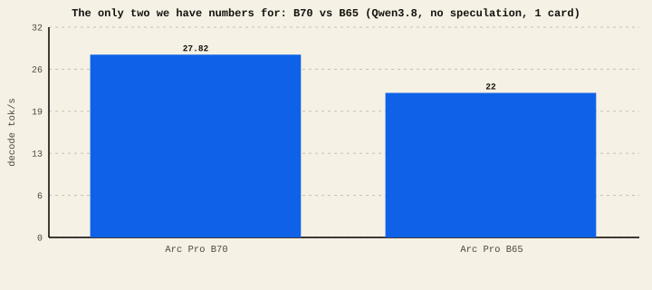

The short version
- VRAM decides what fits (model + context). Memory bandwidth decides decode speed. Compute decides prefill speed. Software support decides whether it works at all.
- We have only benchmarked the Arc Pro B70 ourselves. B65 numbers are community. The rest are vendor specs we have not run.
- More VRAM ≠ faster. A big-capacity card with slow memory can decode slower than a smaller card with fast memory.
- On non-Intel cards the ecosystem changes (ROCm for AMD, CUDA for NVIDIA) — plan for a different software path.
The four numbers that matter
- VRAM (capacity) — can the model's weights plus your context fit? This is the hard gate: too little and it won't run at all.
- Memory bandwidth (GB/s) — how fast the GPU reads memory. Because decode is bandwidth-bound, this is your decode tok/s predictor. HBM > GDDR6 > LPDDR for speed.
- Compute (TFLOPS) — sets prefill and first-token latency.
- Software support — Intel (oneAPI/SYCL, XPU), AMD (ROCm/Vulkan), NVIDIA (CUDA). This determines which runtimes and features (like MTP) you actually get.
What we've actually measured
Be clear-eyed about provenance. Only the B70 is a lab result; the B65 is a contributor's report; we have not benchmarked the other three cards at all. Lab Community
B70 vs B65 — the only two tok/s numbers we have

The contenders, by spec
VRAM and memory type are the most decision-relevant specs. Figures below are vendor/spec unless a lab or community badge says otherwise — we do not publish invented benchmark numbers for cards we haven't run. Spec / vendor
| Card | VRAM | Memory type | Ecosystem | Form factor | LLM status here |
|---|---|---|---|---|---|
| Intel Arc Pro B70 | 32 GB | GDDR6 (fast) | Intel oneAPI / XPU | Desktop GPU | Lab-measured our main lane |
| Intel Arc Pro B65 | 32 GB | GDDR6 (fast) | Intel oneAPI / XPU | Desktop GPU | Community reported |
| Intel Data Center GPU Max 1100 | 48 GB | HBM2e (very fast) | Intel oneAPI | Data-center PCIe | Spec only not tested |
| AMD Radeon AI PRO R9700 | 32 GB | GDDR6 (fast) | AMD ROCm / Vulkan | Workstation GPU | Spec only not tested |
| NVIDIA GB10 (DGX Spark) | 128 GB | Unified LPDDR5X (large, moderate BW) | NVIDIA CUDA | Mini desktop system | Spec only not tested |
Projected comparison Model projection — not measured
We will not invent benchmark numbers for cards we have not run. What we can show is what a physics model projects for them: the ML Bottleneck engine (built by this lab's author) takes each card's published memory bandwidth and compute, the runtime's measured kernel efficiency, and a model's architecture, and projects decode, prompt-processing, and multi-user throughput. It is calibrated against hundreds of community runs — including this lab's B70 measurements — and states its own confidence. Use the bars to compare cards, not to quote a speed.
Loading projections from mlbottleneck.com…
Want a different model, quantization, or card count? Open the full planner on mlbottleneck.com (every GPU, memory maps, scaling charts).
How to read that table
- B70 / B65 — 32 GB GDDR6 desktop cards on Intel's stack. This lab's home turf; everything in these guides was tuned here. B70 is the stronger of the two.
- Max 1100 — 48 GB of HBM2e, the fastest memory here, so it should decode very well and fits bigger contexts — but it's a data-center PCIe card (cooling, power, availability, and driver setup are not consumer-friendly).
- R9700 Pro — 32 GB GDDR6 like the B70, but AMD: you'd run the ROCm or Vulkan path instead of oneAPI, so the software story (and MTP availability) differs.
- GB10 / DGX Spark — a different animal: a small CUDA system with 128 GB unified memory. That huge capacity fits very large models, but unified LPDDR has lower bandwidth than HBM/GDDR, so raw decode tok/s per model may trail a GDDR/HBM card even though far more fits. Great for big-model experimentation, not necessarily for peak tok/s.
The GB10's 128 GB is the biggest number on the page, but it's a capacity number. Decode speed follows bandwidth. A card that fits a model 4× bigger will not decode that model 4× faster — often the opposite. Match the spec to your goal: capacity to run huge models, bandwidth to run a given model fast.
Three honest caveats. 1) We have not benchmarked the Max 1100, R9700 Pro, or GB10 — treat their rows as a spec-shaped starting point, not a verdict, and expect the software path to be the real work on non-Intel cards. 2) Vendor specs are capacity/peak figures; sustained LLM tok/s depends on the runtime and tuning as much as the silicon (see how much our own numbers moved with software alone). 3) Multiple smaller cards (two B70s) can beat one big card for both VRAM and bandwidth if your runtime does tensor-parallel — that's how our multi-card records exist.
For a tuned, documented, consumer-friendly local-LLM box today, the Arc Pro B70 is what this lab can actually vouch for — 32 GB, fast GDDR6, and a working oneAPI/vLLM/llama.cpp path. If you're eyeing the others, buy for the axis you need: Max 1100 for HBM bandwidth + 48 GB (if you can host a data-center card), R9700 Pro if you're committed to AMD/ROCm, and GB10/DGX Spark if fitting very large models matters more than peak tok/s. Then measure it yourself — and send us the numbers.